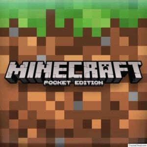
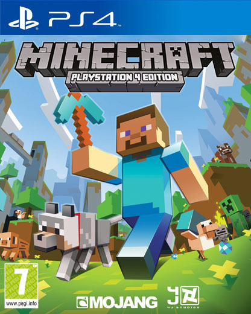
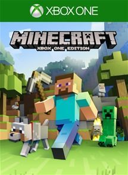
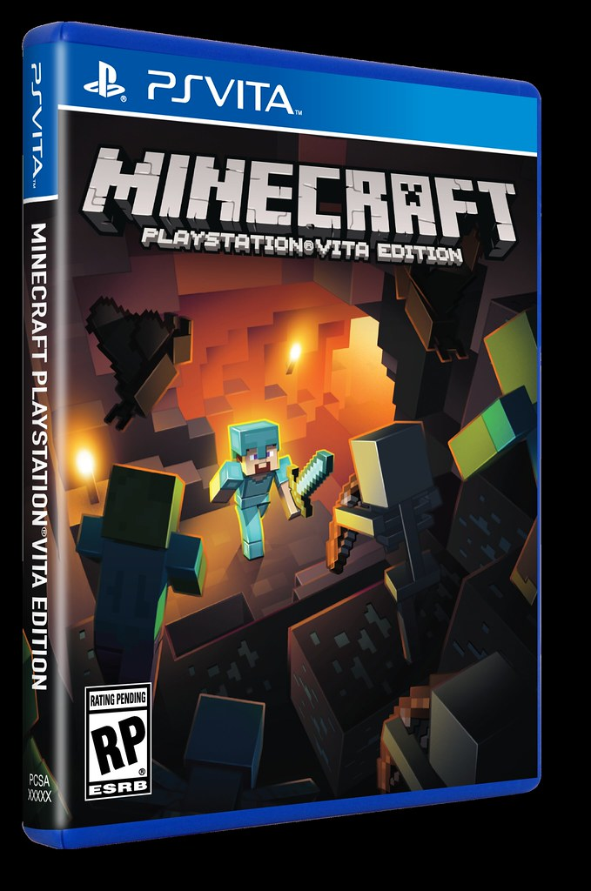
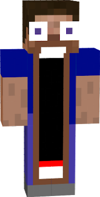
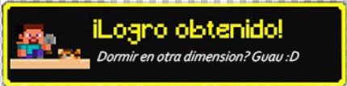

Esta pagina esta ambientada en minecraft con el objetivo de informar sobre algunas cosas de dicho juego, tambien de cierta manera esta hecha para encontrar informacion mas facil y rapido, sin nececidad de indagar tanto y sin anuncios al descargar algo de esta pagina.
Un poco mucho sobre minecraft

Minecraft (java), es un videojuego de construcción de tipo «mundo abierto» o sandbox creado originalmente por el sueco Markus Persson (conocido comúnmente como «Notch»), y posteriormente desar rollado por Mojang Studios (actualmente parte de Microsoft). Fue lanzado el 17 de mayo de 2009, y después de numerosos cambios, su primera versión estable «1.0» fue publicada el 18 de noviembre de 2011.

Un mes antes del lanzamiento de Minecraft en computadoras, se estrenó una versión para dispositivos móviles llamada Minecraft: Pocket Edition en Android, el 17 de noviembre del mismo año fue lanzada la misma versión para iOS. Esta version aunque era muy esperada ya que no se sabia como Mojang innovaria, tuvo mucho errores y tambien muchos usuarios se quejaban de que los sonidos se tenia que descargar aparte, ademas de ser "muy incomodo" a la hora de jugar (segun los usuarios).
 El 9 de mayo de 2012 fue lanzada la versión del juego para Xbox 360 y PS3. Este lanzamiento recibio una buena critica en su momento, ya que las personas estaban impresionadas de como cada mundo que se creaba era distinto, y las personas en ese momento estaban acostumbradas a un mismo mundo. Este lanzamiento sirvio para hacer mucho mas grande y popular este juego, ya que no todos estaban interesados en jugar en computadoras y con la llegada del Minecraft a las consolas no era necesaria una.

En octubre de 2014, Minecraft lanzó su edición para PlayStation Vita. Minecraft Vita fue muy bien recibida por su comunidad ademas de "ser una de las mejores versiones portables", no solo dicho por mi ya que segun la pagina HOBBYCONSOLAS, "Es Vita quien se lleva el gato al agua y ofrece la mejor versión portátil de Minecraft, por múltiples razones. La primera y más importante es el control. Salvo algún terminal puntual, como Xperia Play, PS Vita es la única versión portátil que ofrece un sistema de control preciso y con controles físicos. Como en las consolas de sobremesa, usamos los dos sticks para movernos y mirar, L y R para golpear, usar objetos o comer…",
Lo sabias?:
Minecraft es el juego más vendido de la historia con 350 millones de copias vendidas desde su lanzamiento en 2011. Con un estilo gráfico sencillo, a su alrededor se han creado miles de comunidades que interactúan entre sí.
Unos de los bloques mas temidos por los jugadores es el bloque de Captus, ya que este bloque tiene la capacidad de eliminar cualquier cosa que toque, ademas de hacerte daño si lo tocas.
En minecraft acturalmente solo existen 2 personajes predeterminados, (aunque esto cambie en la 1.20 ya que Mojang tiene pennsado añadir mas personajes promoviedo la diversidad)
la version 1.16 originalmente iba a ser la 1.13, pero los desarrolladores decian que los oceanos se veian muy pobres, incluso mas que el nether

Minecraft se caracteriza por ser un mundo muy grande y casi tener infinitas posisbilidades, bueno desde que los mods llegaron a minecraft esto fue asi, ya que los mods ofrecen un mundo de variedades distintas
si pones una cama en el End o en el Nether te daran un logro que dice "Dormir en otra dimension? Guau :D", este logro fue implementado en la version 1.15 por decicion de los desarrolladores al no tener un logro de este tipo
¿Descargar Minecraf?
Para descargar minecraft tienes que tener en cuenta que existen muchos launchers, incluso algunos llegando a tener viruz. El launcher original de Minecraft lo puedes encontrar en su pagina original, la cual es: https://www.minecraft.net/es-es.
Y si no tienes como pagarlo, no es ilegal jugarlo de otro launcher no pago, ya que mojang quiere que tu juegues, entonces por eso no le ve ningun problema a que te lo descargues por otro medio, y unos de los medios mas recomendable para descargarlo es por medio de Tlauncher, https://tlauncher.org/en/ por medio de esta pagina lo puedes descargar y registrarte sin ningun tipo de pago, aunque tambien lo puedes descargar dandole click a este botom: